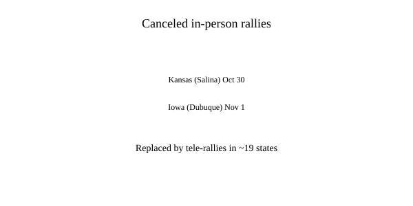

United States · midterms · 30 October 2026
Trump cancels planned Kansas and Iowa rallies, shifting to tele-rallies.

What is agreed across desks
On 29 October 2026 the Republican National Committee announced that President Donald Trump would not hold previously scheduled in-person rallies in Salina, Kansas (30 October) and Dubuque, Iowa (1 November). Instead, the campaign would conduct tele-rallies — shorter virtual events — covering candidates in approximately 19 states in the final days before the 3 November midterm elections. Trump told reporters he did not feel he had to go to Kansas because Senator Roger Marshall was “doing very well.”
Polling averages in both states show tight Senate races: in Kansas, Democratic challenger Adam Hamilton leads or ties Republican incumbent Roger Marshall by a fraction of a point in some averages; in Iowa, Republican nominee Ashley Hinson holds a narrow edge over Democrat Josh Turek. Trump had already held earlier rallies in both states earlier in October.
What is only a quote
“I don’t feel like I have to go to Kansas” is the president’s own explanation. RNC statements that the cancellations allow the president to “reach more voters in the limited time left” are campaign framing. Some anonymous Republican operatives told outlets that demand was high across many races; those attributions remain unconfirmed by named officials. Speculation about health or poll numbers as the sole driver is not supported by an official medical or polling release.
Mechanism a reader needs
Presidential midterm rallies are traditional turnout tools in competitive races. Canceling two and substituting telephone or virtual events multiplies the number of states that can receive a presidential appearance in a compressed schedule. The Kansas and Iowa races are for Senate seats that, if lost, would affect control of the chamber. Marshall and Hinson have at times sought to emphasize local issues; Trump’s prior visits produced mixed local reactions according to contemporaneous reporting.
The RNC described the shift as a “72-hour sprint.” A Florida rally remains on the schedule for 30 October. Tele-rallies reduce travel time and logistics but also remove the visual presence of a large in-person crowd. Whether the change affects turnout is not yet measurable; Election Day is days away.
What this story is not
It is not evidence of a specific health event. It is not a prediction of election outcomes. The Capitol photograph is a neutral exterior still, not a rally image.

Source articles and scores
| Outlet | Headline | T | N | C |
|---|---|---|---|---|
| USA Today | Trump cancels rallies in Iowa, Kansas as midterms near | 95 | 0 | 100 |
| NBC News | Trump cancels weekend rallies in Iowa and Kansas in favor of holding numerous tele-rallies | 94 | 0 | 100 |
| Reuters | Trump cancels weekend rallies, plans to phone in to other midterm campaign events | 96 | 0 | 100 |
Hero: Wikimedia Commons U.S. Capitol west front (type/location). Chart is original SVG. No rally-crop photographs used.